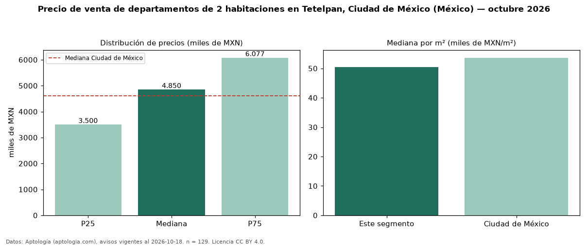

Precio de venta de departamentos de 2 habitaciones en Tetelpan, Ciudad de México (México) — octubre 2026
Con 129 avisos vigentes, el precio mediano de departamentos de 2 habitaciones en venta en Tetelpan, Ciudad de México (México) es MXN 4,85 millones. Frente a la mediana de Ciudad de México para departamentos de 2 habitaciones (MXN 4,61 millones), queda 5 % por encima. Por metro cuadrado, la mediana es MXN 50.457/m² (n = 127 avisos con área), 6 % por debajo de Ciudad de México (MXN 53.623/m²). Son 64 % de los 203 avisos de departamentos en venta de la zona, cuya mediana general es MXN 5,46 millones (−11 %). El área mediana anunciada es 102 m². La mitad central de los avisos va de MXN 3,50 millones a MXN 6,08 millones (razón 1,7), una dispersión moderada. Datos: Aptología (aptologia.com), CC BY 4.0 — https://www.aptologia.com/. Archivos: PDF, CSV con las cifras y gráfica PNG.

| Avisos únicos | 129 |
|---|---|
| Percentil 25 | COP 3.500.000 |
| Mediana | COP 4.850.000 |
| Percentil 75 | COP 6.077.200 |
| Mediana por m² | COP 50.456 |
Fuente: avisos vigentes de portales inmobiliarios recopilados por Aptología, deduplicados (mínimo 30 avisos únicos por celda). Precios pedidos, no cerrados. Fecha: 2026-10-18.